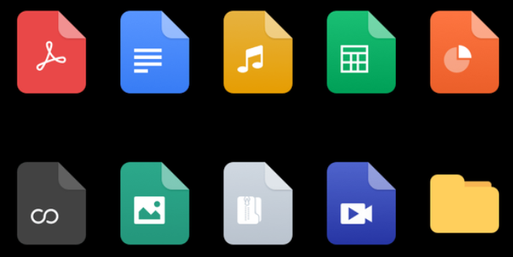
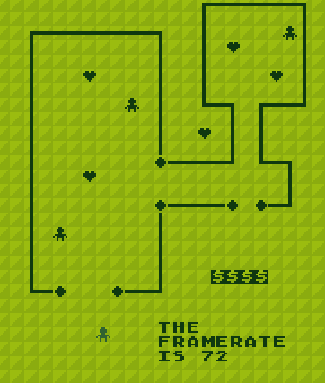
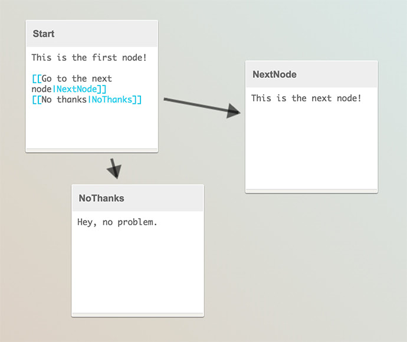

Summer 2022
In coding, a library is a collection of prewritten code that programmers can use, so that they don't have to work entirely from scratch. Almost all code uses libraries. Here are some libraries I've made that you can use in your projects.
Most of them are meant to be combined with P5JS, which is a Javascript library designed for creative coding and building generative and interactive art.
Makes P5JS sketches behave more consistently on mobile devices, while also adding helpful features related to the cursor on PCs.
Visit Mobile Friendly Cursor LibraryMakes it easy to asynchronously load files; it allows you to draw things to the canvas while files are still loading, without having to use P5's preload function.
Note: As of July 2023, this library may have trouble loading sounds on Firefox.
 Visit Asynchronous Loading LibraryRenders tile maps (especially those made with https://lvllvl.com) to your P5JS sketch without slowing the framerate. It achieves this by only rendering a few tiles at a time (with plenty of configurable settings).
 Visit Tile Renderer LibraryAn easy way to integrate dialogue trees created with Yarn Spinner into your Javascript project. Useful for making role playing games.
(Does not require P5JS)
 Visit Yarn Spinner Library